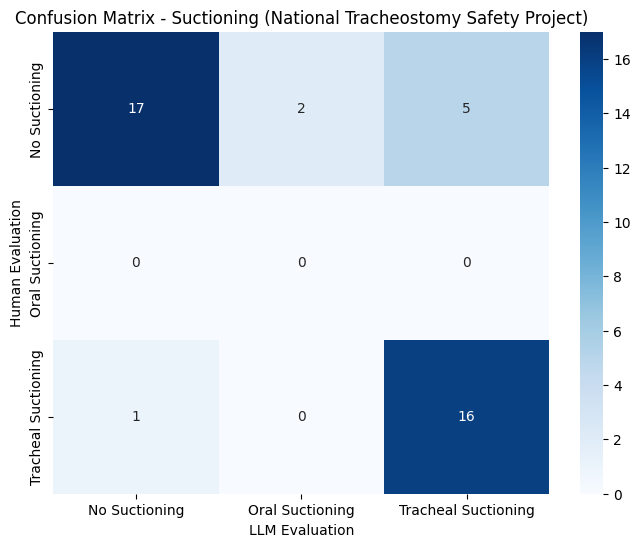

This analysis evaluates the performance of LLaMA 3.2 Vision model in detecting three types of medical suctioning procedures across 190 medical images. The model achieved 58.42% accuracy for the three label classifications (No Suctioning, Oral Suctioning, Tracheal Suctioning), with varying performance across different suctioning types.
Key findings from the analysis:
Number of Disagreements: 79
Category-Specific Performance
Tracheal Suctioning: Low precision (0.20) but high recall (0.94)
Video-Specific Results
Lower Performance: "#9 How to perform oral suctioning" - 49.44% accuracy
Key Challenges
Lower accuracy in animated, CG, or non-standard clinical settings
Notable Strengths
This analysis highlights both the potential and current limitations of using LLaMA 3.2 Vision for medical procedure detection, suggesting specific areas for improvement in future iterations.
The frame extraction process is implemented using OpenCV (cv2) with the following specifications:
Applies consistent naming convention: {video_name}_frame_{frame_number}.jpg
Statistics:
For detailed implementation, see:
python:split2frames.py
def extract_frames_from_videos(video_dir, output_dir, frequency=2):
LLaMA 3.2 Vision Model Integration ```python:llama32_detect.py def img2text(input_path, output_file = None, exportedfile_indexing = False, show_img = False, max_new_tokens = 1000): device = torch.device("cuda" if torch.cuda.is_available() else "cpu")
model_id = "meta-llama/Llama-3.2-11B-Vision-Instruct" model = MllamaForConditionalGeneration.from_pretrained( model_id, torch_dtype=torch.bfloat16,
)
model = model.to(device) processor = AutoProcessor.from_pretrained(model_id)
dir = [input_path] if os.path.isdir(input_path): dir = os.listdir(input_path)
data = [] result = {} for i, image_path in enumerate(sorted(dir)): # Read the image if os.path.isdir(input_path): image = Image.open(Path(input_path).joinpath(image_path)) else: image = Image.open(image_path)
# Describe the image
input_text = processor.apply_chat_template(msgs("Describe the image in detail."), add_generation_prompt=True)
inputs = processor(
image,
input_text,
add_special_tokens=False,
return_tensors="pt"
).to(model.device)
res = model.generate(**inputs, max_new_tokens=max_new_tokens)
res = processor.decode(res[0]).split("<|end_header_id|>")[-1].replace('\n', ' ')
# Show the steps based on the image
prompt = "The picture is about the following:\n" +res +'\n' + prompt_orig
input_text = processor.apply_chat_template(msgs(prompt), add_generation_prompt=True)
inputs = processor(
image,
input_text,
add_special_tokens=False,
return_tensors="pt"
).to(model.device)
res = model.generate(**inputs, max_new_tokens=max_new_tokens)
res = processor.decode(res[0])
print('\n', i, image_path)
#print(generated_text,'\n')
print('Full Response\n', res)
reason = res.split("<|end_header_id|>")[-1]
print("Reason:", reason.replace('\n', ' '))
# Conclude
input_text = processor.apply_chat_template(
msgs(reason + "\nTask: Provide your final classification in the following format ONLY:\nCLASSIFICATION: [No Suctioning/Oral Suctioning/Tracheal Suctioning]"),
add_generation_prompt=True
)
inputs = processor(
image,
input_text,
add_special_tokens=False,
return_tensors="pt"
).to(model.device)
res = model.generate(**inputs, max_new_tokens=max_new_tokens)
res = processor.decode(res[0])
response_text = res.split("<|end_header_id|>")[-1]
# Extract classification using more robust parsing
classification = "Unknown"
if "CLASSIFICATION:" in response_text:
classification_text = response_text.split("CLASSIFICATION:")[-1].strip()
# Remove any trailing text after the classification
classification_text = classification_text.split("\n")[0].strip()
# Remove any square brackets
classification_text = classification_text.strip("[]")
# Normalize the text and check for matches
classification_text = classification_text.lower()
if "no suctioning" in classification_text:
classification = "No Suctioning"
elif "oral suctioning" in classification_text:
classification = "Oral Suctioning"
elif "tracheal suctioning" in classification_text:
classification = "Tracheal Suctioning"
print("Classification:", classification)
# Parse the detailed reason response
parsed_reason = {}
if "OBSERVATION:" in reason:
sections = reason.split("EVIDENCE:")
if len(sections) > 1:
parsed_reason = {
"observation": sections[0].split("OBSERVATION:")[-1].split("CLASSIFICATION:")[0].strip(),
"evidence": sections[1].strip()
}
data.append([image_path, classification, parsed_reason])
result[image_path] = (classification, parsed_reason)
if show_img:
display(HTML(f'<img src="{Path(input_path).joinpath(image_path) if os.path.isdir(input_path) else image_path }" style="width:30%;">'))
data.sort()
if output_file is not None: data_frame = pd.DataFrame(data, columns=['Image', 'llm_evaluation', 'Reason']) data_frame.to_csv(output_file, sep = '\t', index = exportedfile_indexing, encoding = 'utf-8') return result ```
The human evaluation interface provides a simple way to assess images with the following features: - Displays current image with filename - Shows LLM's evaluation and reasoning - Keyboard controls: - 'n' for No Suctioning - 'o' for Oral Suctioning - 't' for Tracheal Suctioning - Progress tracking and automatic result saving
Implementation details: ```python:human_evaluation.py class ImageEvaluator: def init(self): # Get list of images from frames directory self.image_files = sorted([f for f in os.listdir("frames") if f.endswith(('.png', '.jpg', '.jpeg'))]) self.current_index = 0 self.results = {}
# Load LLM evaluations
self.llm_df = pd.read_csv('llm_result.tsv', sep='\t')
self.llm_df.set_index('Image', inplace=True)
# Create figure
self.fig = plt.figure(figsize=(10, 10))
self.ax_img = plt.axes([0.1, 0.2, 0.8, 0.7])
# Connect keyboard event handler
self.fig.canvas.mpl_connect('key_press_event', self.on_key_press)
# Start evaluation
self.evaluate_images()
def evaluate_images(self):
plt.ion() # Turn on interactive mode
while self.current_index < len(self.image_files):
self.display_current_image()
plt.pause(0.001) # Small pause to allow GUI to update
# Wait for keyboard input
while self.current_index == len(self.results):
plt.pause(0.1)
# Check if we've processed all images
if self.current_index >= len(self.image_files):
plt.close('all')
self.save_results()
return # Exit the method after saving
# Save results if we exit the main loop
plt.close('all')
self.save_results()
def display_current_image(self):
current_image = self.image_files[self.current_index]
# Get LLM evaluation and reason if available
llm_eval = "Unknown"
reason = "No reason provided"
if current_image in self.llm_df.index:
llm_eval = self.llm_df.loc[current_image, 'llm_evaluation']
reason = self.llm_df.loc[current_image, 'Reason']
# Clear previous image
self.ax_img.clear()
# Load and display current image
image_path = os.path.join("frames", current_image)
img = Image.open(image_path)
self.ax_img.imshow(img)
self.ax_img.axis('off')
self.ax_img.set_title(f"Image {self.current_index + 1}/{len(self.image_files)}\n"
f"Filename: {current_image}\n"
f"LLM Evaluation: {llm_eval}\n"
f"LLM Reason: {reason[:300]}...\n"
f"Press 'n' for No Suctioning, 'o' for Oral Suctioning, or 't' for Tracheal Suctioning") # Show first 300 chars of reason
plt.draw()
def on_key_press(self, event):
if event.key in ['n', 'o', 't'] and self.current_index < len(self.image_files):
current_image = self.image_files[self.current_index]
if event.key == 'n':
self.results[current_image] = 'No Suctioning'
elif event.key == 'o':
self.results[current_image] = 'Oral Suctioning'
elif event.key == 't':
self.results[current_image] = 'Tracheal Suctioning'
self.current_index += 1
if self.current_index < len(self.image_files):
self.display_current_image()
plt.draw()
def save_results(self):
# Convert results to DataFrame and save as TSV
df = pd.DataFrame.from_dict(self.results, orient='index', columns=['human_evaluation'])
df.index.name = 'Image'
df = df.sort_index() # Sort by filename
df.to_csv('human_result.tsv', sep='\t')
print(f"\nResults saved to human_result.tsv")
print(f"Evaluated {len(self.results)} images")
```
| Class | Precision | Recall | F1-Score | Support | |-------|-----------|---------|-----------|----------| | No Suctioning | 0.875 | 0.647 | 0.744 | 119 | | Oral Suctioning | 0.783 | 0.333 | 0.468 | 54 | | Tracheal Suctioning | 0.203 | 0.941 | 0.333 | 17 |

Image: Suctioning (National Tracheostomy Safety Project)_frame_32.jpg
- Evaluation: Both human and LLM correctly identified no suctioning
- LLM Reasoning: {}...
- Key Features: Absence of suctioning equipment or procedure
Image: #9 How to perform oral suctioning_frame_38.jpg
- Evaluation: Both human and LLM correctly identified no suctioning
- LLM Reasoning: {}...
- Key Features: Absence of suctioning equipment or procedure
Image: #9 How to perform oral suctioning_frame_84.jpg
- Evaluation: Both human and LLM correctly identified oral suctioning
- LLM Reasoning: {'observation': '\n\nThe image shows a person\'s hand holding a clear suction device with a long, thin tube attached to it. The tube is being inserted into the mouth of a mannequin head. The mannequ...
- Key Features**: Dental setting, oral cavity access, wide-bore suction tools
Image: #9 How to perform oral suctioning_frame_88.jpg
- Evaluation: Both human and LLM correctly identified oral suctioning
- LLM Reasoning: {'observation': "\n\nThe image depicts a baby's head and neck with a tube being inserted into the mouth. A hand is visible holding the tube, and the baby appears to be lying on a white surface with ...
- Key Features**: Dental setting, oral cavity access, wide-bore suction tools
Image: Suctioning (National Tracheostomy Safety Project)_frame_25.jpg
- Evaluation: Both human and LLM correctly identified tracheal suctioning
- LLM Reasoning: {'observation': '\nThe patient is lying in a hospital bed, with a healthcare professional standing next to them. The healthcare professional is wearing blue scrubs and latex gloves, and is holding a...
- Key Features**: Tracheostomy access, sterile catheter, supine positioning
Image: Suctioning (National Tracheostomy Safety Project)_frame_24.jpg
- Evaluation: Both human and LLM correctly identified tracheal suctioning
- LLM Reasoning: {'observation': 'A woman lying in a hospital bed with a tube inserted into her neck, and a medical professional standing beside her.', 'evidence': "The tube inserted into the woman's neck, the medical...
- Key Features: Tracheostomy access, sterile catheter, supine positioning
Image: Oral suctioning_frame_4.jpg
- Human Evaluation: No Suctioning
- LLM Evaluation: Tracheal Suctioning
- LLM Reasoning: {}...
- Analysis of Disagreement: Misclassification between No Suctioning and Tracheal Suctioning
Image: Oral suctioning_frame_8.jpg
- Human Evaluation: Oral Suctioning
- LLM Evaluation: Tracheal Suctioning
- LLM Reasoning: {'observation': " The image shows a woman in a blue shirt and black pants, wearing gloves and a mask, standing next to a hospital bed with a mannequin inside. The woman is holding a suction catheter...
- Analysis of Disagreement**: Misclassification between Oral Suctioning and Tracheal Suctioning
Image: Performing Oropharyngeal Suctioning_frame_1.jpg
- Human Evaluation: No Suctioning
- LLM Evaluation: Tracheal Suctioning
- LLM Reasoning: {}...
- Analysis of Disagreement: Misclassification between No Suctioning and Tracheal Suctioning
_frame_10.jpg)
Representative frame showing tracheal suctioning
| Class | Precision | Recall | F1-Score | Support | |-------|-----------|---------|-----------|----------| | No Suctioning | 0.944 | 0.708 | 0.810 | 24 | | Oral Suctioning | No samples | No samples | No samples | 0 | | Tracheal Suctioning | 0.762 | 0.941 | 0.842 | 17 |


Representative frame showing oral suctioning
| Class | Precision | Recall | F1-Score | Support | |-------|-----------|---------|-----------|----------| | No Suctioning | 0.933 | 0.848 | 0.889 | 33 | | Oral Suctioning | 0.000 | 0.000 | 0.000 | 10 | | Tracheal Suctioning | No samples | No samples | No samples | 0 |


Representative frame showing oral suctioning
| Class | Precision | Recall | F1-Score | Support | |-------|-----------|---------|-----------|----------| | No Suctioning | 0.794 | 0.540 | 0.643 | 50 | | Oral Suctioning | 0.850 | 0.436 | 0.576 | 39 | | Tracheal Suctioning | No samples | No samples | No samples | 0 |

Add confidence scoring for predictions
Data Collection
python
model_id = 'meta-llama/Llama-3.2-11B-Vision-Instruct'
model = MllamaForConditionalGeneration.from_pretrained(
model_id,
torch_dtype=torch.bfloat16
)
The model uses a carefully crafted prompt with three key components:
Role Definition
You are a medical image analysis expert. Your task is to carefully analyze the image and determine if it shows a patient undergoing suctioning using a tube. Classify the scenario into one of the following categories: No Suctioning, Oral Suctioning (dental), or Tracheal Suctioning (throat/covid).
Definitions and Criteria ```
Caregiver position: Within 45 degrees of patient's front, at oral level
Tracheal Suctioning:
Caregiver position: Standing at head of bed, within 30cm of patient's head ```
Analysis Framework The model evaluates each image using four key aspects:
Patient and Caregiver Assessment
Provider positioning relative to patient
Equipment Verification
Proper equipment usage
Procedure Context
Supporting medical equipment
Active Suctioning Indicators
mermaid
graph TD
A[Input Image] --> B[Image Processing]
B --> C[LLaMA Vision Model]
C --> D[Structured Analysis]
D --> E[Classification]
E --> F[Detailed Reasoning]
The model generates a structured output with three components: 1. Detailed analysis of the medical scene 2. Classification into one of three categories: - No Suctioning - Oral Suctioning - Tracheal Suctioning 3. Supporting reasoning with key observations
Example output: ``` Analysis of the Image The image shows a medical professional in PPE standing at the head of a hospital bed...
Key Observations - Patient positioning: Supine at 30° incline - Equipment: Sterile catheter (4mm diameter) - Procedure: Active insertion through tracheostomy - Setting: ICU with monitoring equipment
Classification Tracheal Suctioning ```